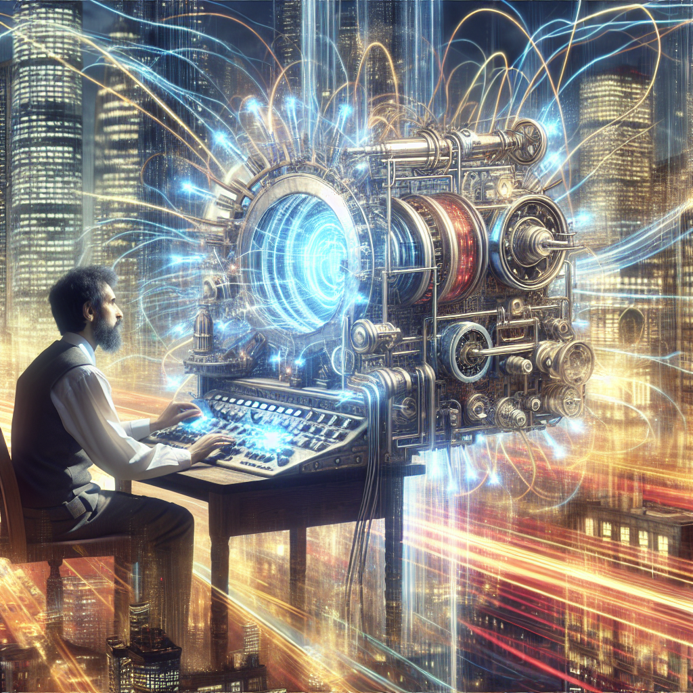
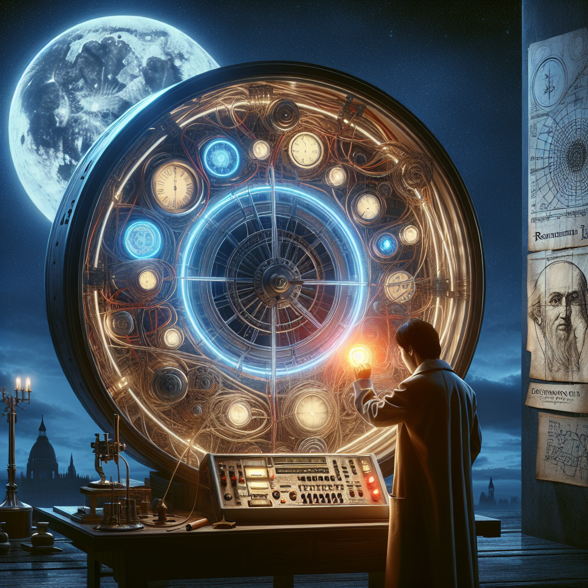
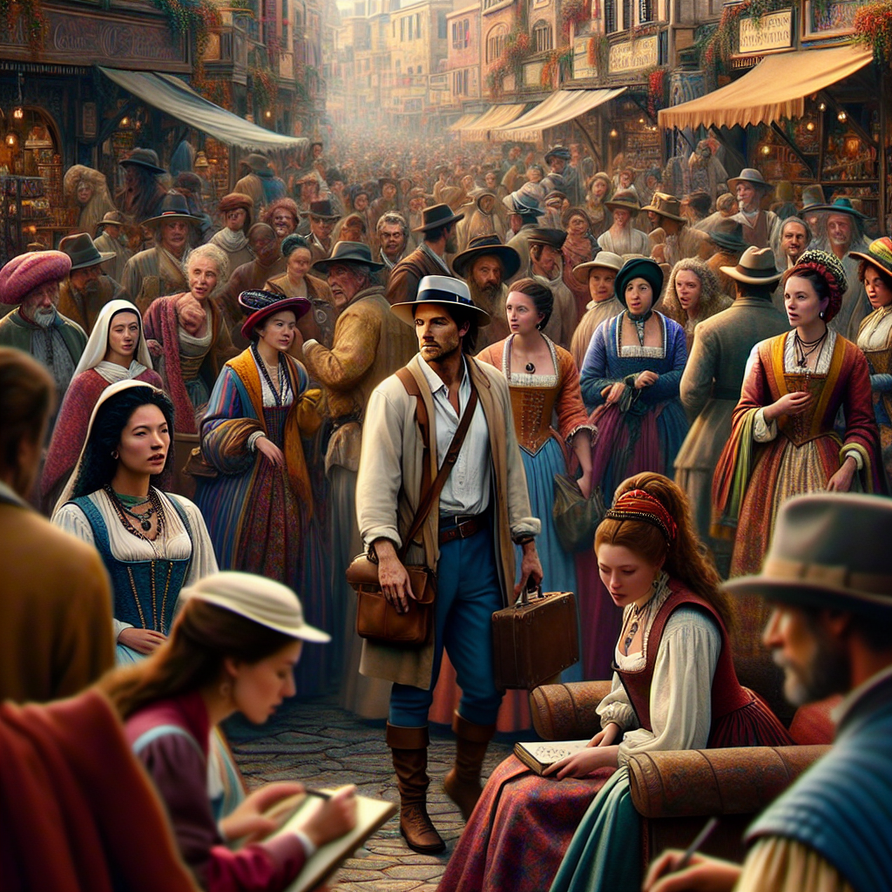
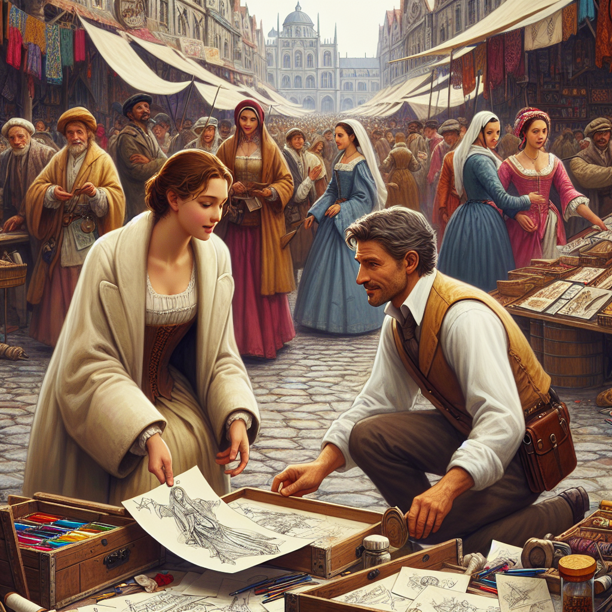
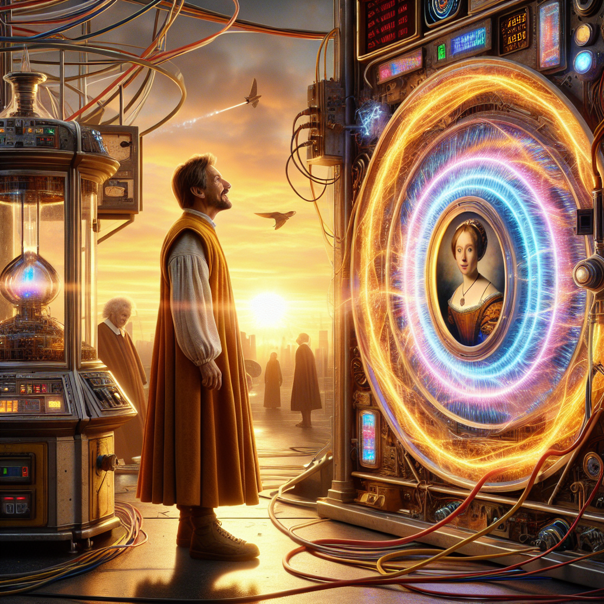

Generated Scenes
- 'scene 1', 'In a bustling city, a brilliant scientist
named Dr. Leo Harper worked day and night on his groundbreaking
invention: a time machine. After years of research and countless failed
experiments, he finally succeeded. The machine stood before him,
gleaming with wires and lights, its control panel pulsing with energy.']

- ['scene 2', 'One fateful evening, as the moon hung low
in the sky, Dr. Harper decided to test his invention. He programmed the
machine to take him back to the Renaissance period, a time he had always
admired. With a deep breath, he stepped inside, set the dials, and
pressed the glowing red button.']

- ['scene 3', 'In an instant, he was transported to a
lively marketplace filled with people dressed in vibrant clothing. He
marveled at the sights and sounds, feeling as though he had stepped into
a painting. However, as he wandered the streets, he accidentally bumped
into a young artist named Isabella, causing her to drop her
sketchbook.']

- ['scene 4', 'Apologizing profusely, Dr. Harper helped
her gather her scattered drawings. Isabella was intrigued by his modern
clothing and peculiar accent. They spent the day together, discussing
art, science, and dreams of the future. Dr. Harper felt a connection
with Isabella that he had never experienced before.']

- ['scene 5', 'As the sun began to set, Dr. Harper
realized he had to return to his time. Torn between his love for
Isabella and his responsibility to his own time, he faced a difficult
choice. Should he stay and embrace a new life with her, or return to his
own era and continue his work? In the end, he chose to return home,
believing that the future held endless possibilities. With a heavy
heart, he activated the time machine and stepped back into the familiar
chaos of the present day. However, as he arrived back in his lab, he
discovered that time had changed. His invention had altered the
timeline, and Isabella was now a renowned artist in his time, her works
celebrated worldwide. Dr. Harper smiled, knowing that their paths would
cross again, and perhaps this time, he could find a way to be with her.'

Back